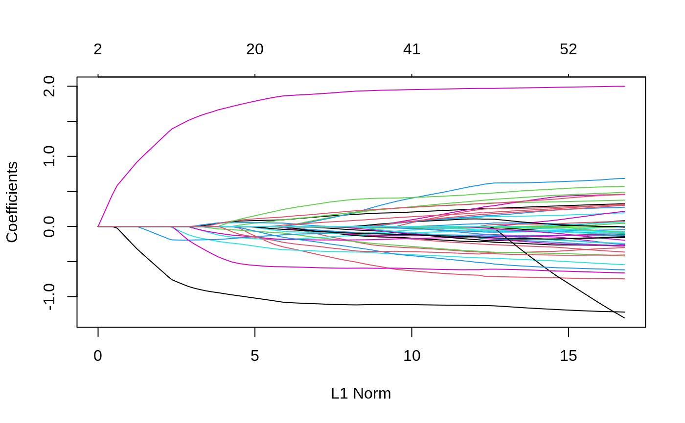
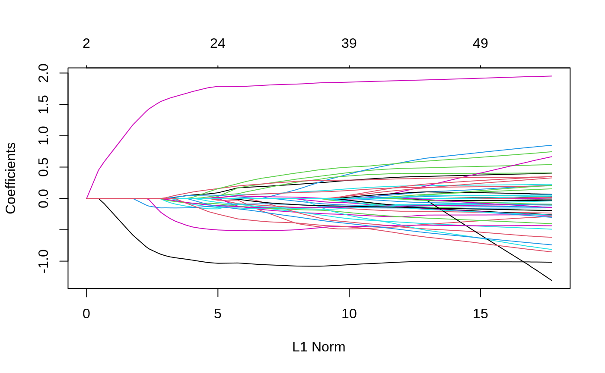
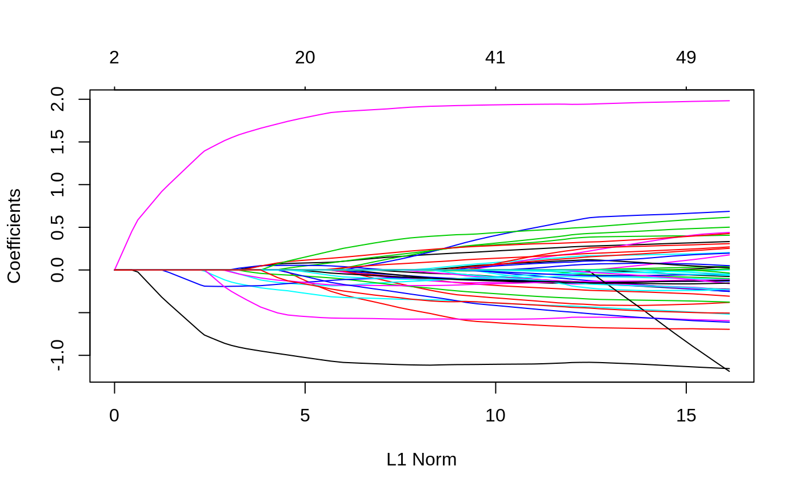
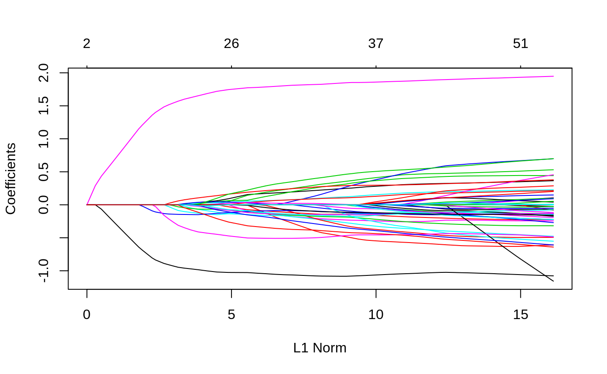

vignettes/alternative-kinship-input.Rmd
alternative-kinship-input.RmdThere are three different ways that the ggmix function can take the population structure information:
1) kinship: A \(n \times n\) kinship matrix
2) K: A \(n \times k\) matrix of SNPs used to determine the relatedness between subjects
3) U: the eigenvectors of the kinship matrix or the left singular vectors of K, and D: the eigenvalues of the kinship matrix or the square of the singular values of K
We provide this flexibility to allow for a low rank estimation procedure (not yet implemented), and in case the user has already calculated this information elsewhere.
We have already seen how to use the kinship argument:
library(ggmix)
data("admixed")
# supply p.fac to the penalty.factor argument
res <- ggmix(x = admixed$xtrain, y = admixed$ytrain, kinship = admixed$kin_train)
plot(res)
Alternatively we can directly supply the eigenvectors and eigenvalues of the kinship matrix:
eigKinship <- eigen(admixed$kin_train)
resUD <- ggmix(x = admixed$xtrain, y = admixed$ytrain,
U = eigKinship$vectors[,which(eigKinship$values>0)],
D = eigKinship$values[which(eigKinship$values>0)])
plot(resUD)
coef(resUD, s = 0.059, type = "nonzero")
#> 1
#> (Intercept) 0.047681320
#> X23 0.126542703
#> X36 -0.047001272
#> X38 0.093898444
#> X53 0.029435618
#> X74 -0.055636448
#> X114 -0.028035684
#> X139 0.060368266
#> X168 -0.128772908
#> X266 0.037493209
#> X271 -0.147801316
#> X300 -0.102856335
#> X302 -0.106338885
#> X315 -0.122440007
#> X336 0.176090696
#> X352 -0.077292020
#> X403 0.025026928
#> X431 0.027551187
#> X503 -0.508237394
#> X512 -0.005497255
#> X516 0.192053842
#> X407 -0.144545442
#> X524 1.786112263
#> X538 -1.031819918
#> X243 -0.285539321
#> eta 0.200213302
#> sigma2 0.700635042We can also run a singular value decomposition (SVD) on the matrix of SNPs used to construct the kinship matrix. This approach is computationally less expensive since it bypasses explicit computation of the kinship matrix.
svdXkinship <- svd(admixed$Xkinship)
resUDsvd <- ggmix(x = admixed$xtrain, y = admixed$ytrain, U = svdXkinship$u,
D = svdXkinship$d ^ 2)
plot(resUDsvd)
coef(resUDsvd, s = 0.059, type = "nonzero")
#> 1
#> (Intercept) 0.4562336541
#> X23 0.0789348528
#> X114 -0.0682676723
#> X139 0.0336526120
#> X168 -0.2561862384
#> X266 0.0547329693
#> X271 -0.1619826024
#> X300 -0.0643016006
#> X302 -0.1520989560
#> X315 -0.1355479154
#> X336 0.1056681659
#> X352 -0.0079099086
#> X503 -0.5353788607
#> X512 -0.0000192487
#> X516 0.1244635120
#> X407 -0.0488160926
#> X524 1.7607826888
#> X538 -1.0083798991
#> X243 -0.1425131821
#> eta 0.0800548605
#> sigma2 0.0601775121The results differ from the one using the kinship matrix above because this simulated data comes from an admixed population, and therefore, using a matrix of SNPs in this case may not be appropriate. The kinship matrix in the admixed data was calculated using the popkin function from the popkin package.
We can directly supply the matrix of SNPs used to calculated the kinship matrix also to the K argument:

coef(resK, s = 0.059, type = "nonzero")
#> 1
#> (Intercept) -0.055662895
#> X23 0.137358099
#> X36 -0.061831996
#> X38 0.117679641
#> X53 0.050360654
#> X74 -0.066489152
#> X114 -0.004105575
#> X139 0.067550186
#> X168 -0.102302964
#> X266 0.032169167
#> X271 -0.144466682
#> X300 -0.104006258
#> X302 -0.105967064
#> X315 -0.108361010
#> X336 0.182578367
#> X352 -0.084505327
#> X403 0.024576514
#> X431 0.033411418
#> X503 -0.494270852
#> X512 -0.006342498
#> X516 0.205602611
#> X407 -0.139947462
#> X524 1.765426856
#> X538 -1.026737258
#> X243 -0.302416196
#> eta 0.024537754
#> sigma2 0.683820422